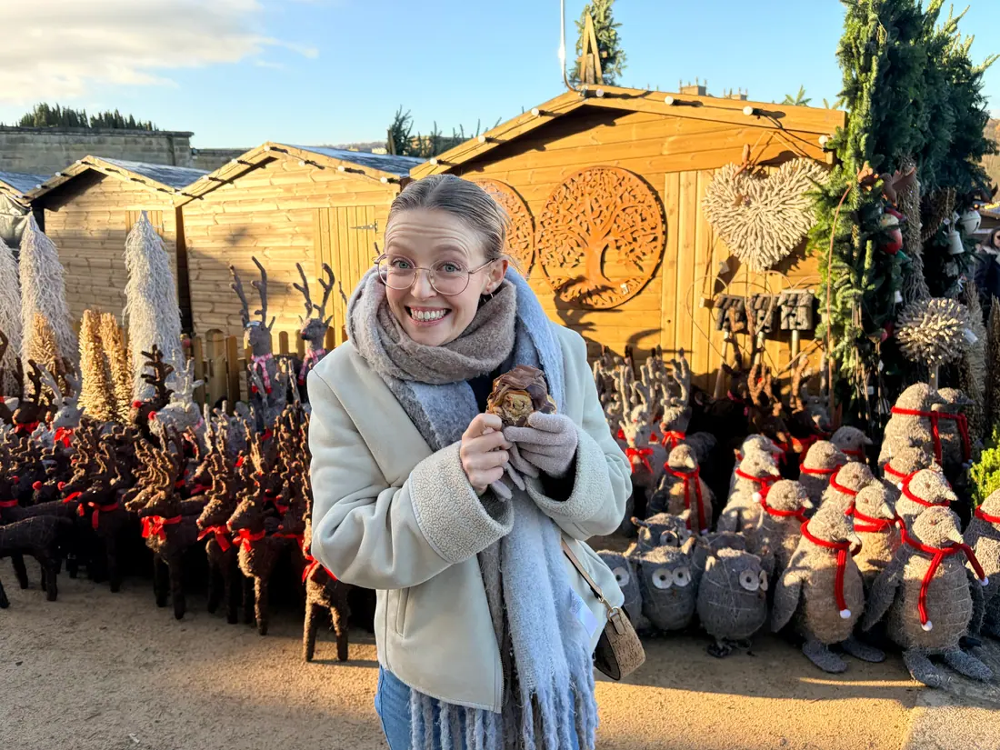
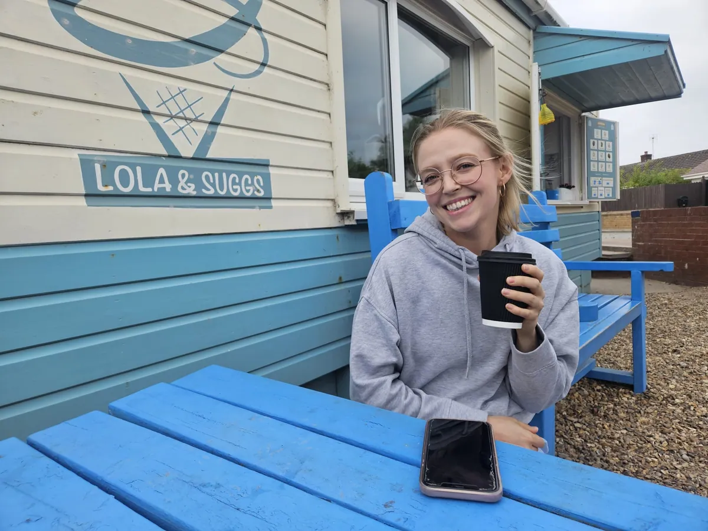

Hey! I'm Michelle
I'm a product designer who loves creating thoughtful, intuitive, and engaging digital experiences. I'm especially drawn to UX, digging into problems, understanding people, and shaping ideas into something that actually works in the real world, while also enjoying UI when I get to bring everything together in a polished, expressive way.
Right now I'm at Slimming World, leading UX on the redesign of their public group search.
My path into design has been a bit of a journey. I studied Psychology , which sparked my interest in human behaviour, and later completed a diploma in Software Development where I first discovered UX/UI and everything just clicked.
Before design, I lived in China for 5 years teaching English, which taught me a lot about communication, adaptability, and connecting with people from different backgrounds, all of which still shape how I approach design today.
Outside of work, I'm pretty laid back – you'll usually find me reading , walking my dog in nature , at the gym , or testing out way too many desserts .

